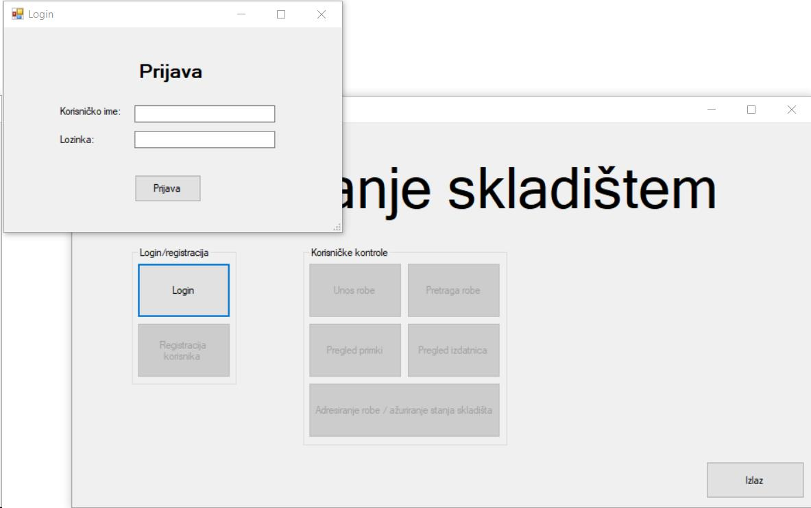

Klikom na tipku "Login" u glavnom izborniku otvara se obrazac za prijavu korisnika. Korisnik upisuje svoje korisničko ime i lozinku u obrazac te klikom na "Prijava", ukoliko je korisnikova prijava uspješna, prijavljuje se u aplikaciju i otvaraju mu se korisničke kontrole u izborniku. Ukoliko je korisnik administrator, otvara mu se i mogućnost registracije novih zaposlenika.
